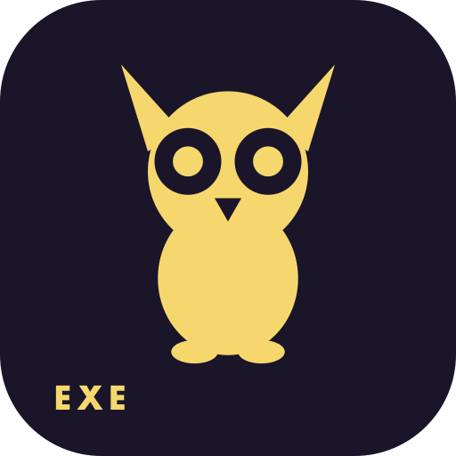
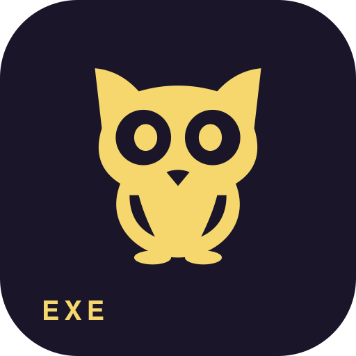
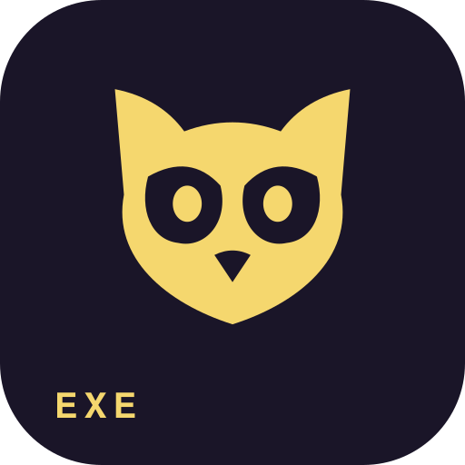

REFERENCE

Current owl
The original, for comparison.
WATCHERby EXE
Actual sizes
WATCHER / IDENTITY STUDIES / OCTOBER 2026
Three evolutions of Watcher’s yellow owl, shown where they’ll live.
The same gold, the same purple, the same pink wordmark. All existing fonts kept.

The original, for comparison.

Our pick. A smoother silhouette, wider face and quiet wing details. Still unmistakably Watcher.

Rounder and a little more companionable, with a broad face and tucked wings.

A compact, face-only mark. Strongest at tiny sizes, with a more focused expression.
Our pick. A smoother silhouette, wider face and quiet wing details. Still unmistakably Watcher.
Choose a preview above to compare it at the current header and menu-bar sizes.